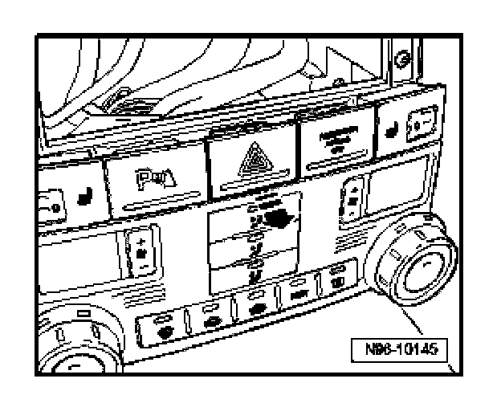
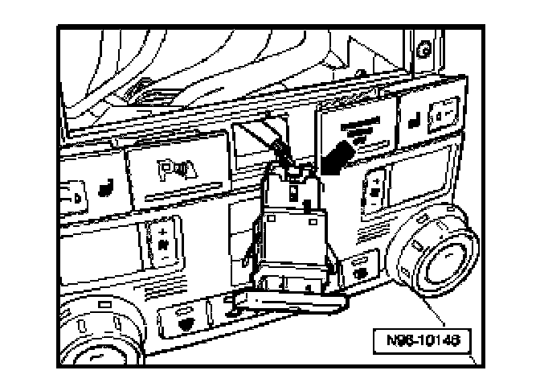

Parking Assist Switch: Service and Repair
Parking Aid Button -E266-, Removing And Installing
Parking aid button removal and installation procedure is the same as for all switches located in center of instrument panel.
Switches In Center Of Instrument Panel, Removing And Installing
Removal and installation of the
- heated seat adjusters
- hazard warning light switch
- parking aid button
- switches for optional equipment is the same for all switches as described below
CAUTION: When removing switches, lights or displays, prevent damage to visible areas of the vehicle interior by always applying appropriate tape to area surrounding the component, and the tools being used (screwdrivers, wedges etc.).
Removing
- Switch off all electrical consumers, switch off ignition and remove ignition key.
- Remove radio or radio/navigation unit

- Press switch from behind out of installation frame.

- Disconnect electrical connection -arrow-.
Installing
Install in reverse order of removal.